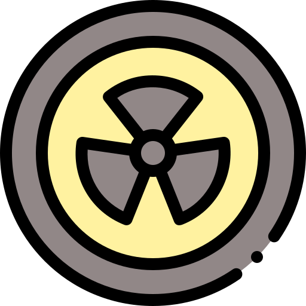
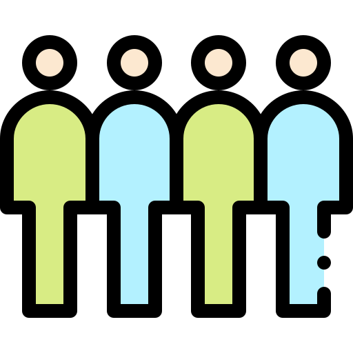

Metas

Meta 1
Reforçar a resiliência e a capacidade de adaptação a riscos relacionados ao clima e às catástrofes naturais em todos os países.

Meta 2
Integrar medidas da mudança do clima nas políticas, estratégias e planejamentos nacionais.

Meta 3
Melhorar a educação, aumentar a conscientização e a capacidade humana e institucional sobre mitigação da mudança do clima, adaptação, redução de impacto, e alerta precoce.

Meta 4
Implementar o compromisso assumido pelos países desenvolvidos partes da UNFCCC para a meta de mobilizar conjuntamente US$ 100 bilhões por ano a partir de 2020, de todas as fontes, para atender às necessidades dos países em desenvolvimento.